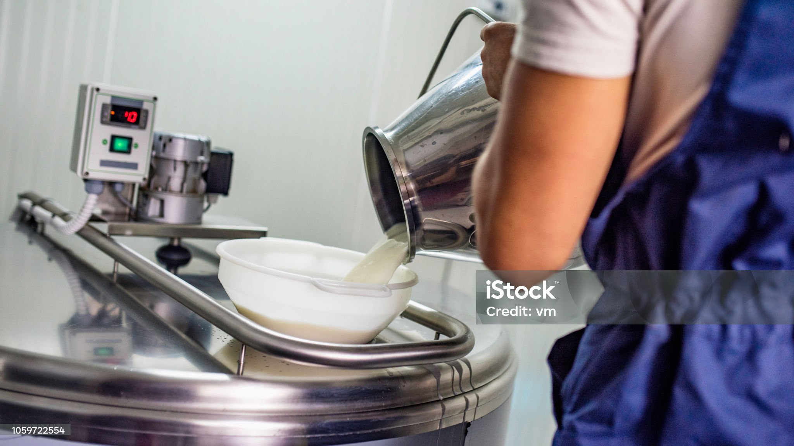

Dairy farming is an agricultural practice focused on raising animals, primarily cows, for milk production. This milk is then processed into various dairy products like cheese, yogurt, and butter. It's a vital part of agriculture, providing a stable source of income and food, and is particularly important in countries like India where it's a significant part of the economy.
Dairy refers to milk and products made from milk, like cheese, yogurt, and butter. It's a significant source of nutrition, providing essential nutrients like calcium, vitamin D, and protein, and is part of many diets globally. While cow's milk is the most common, other animals like buffalo, goats, and sheep also contribute to dairy production.